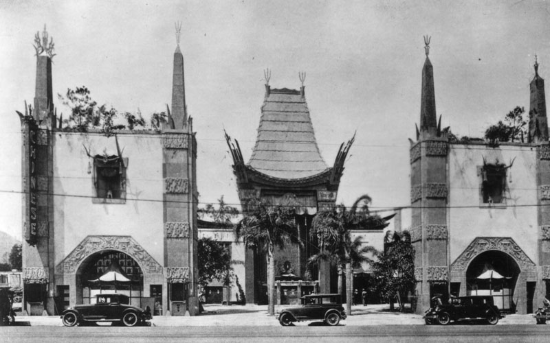
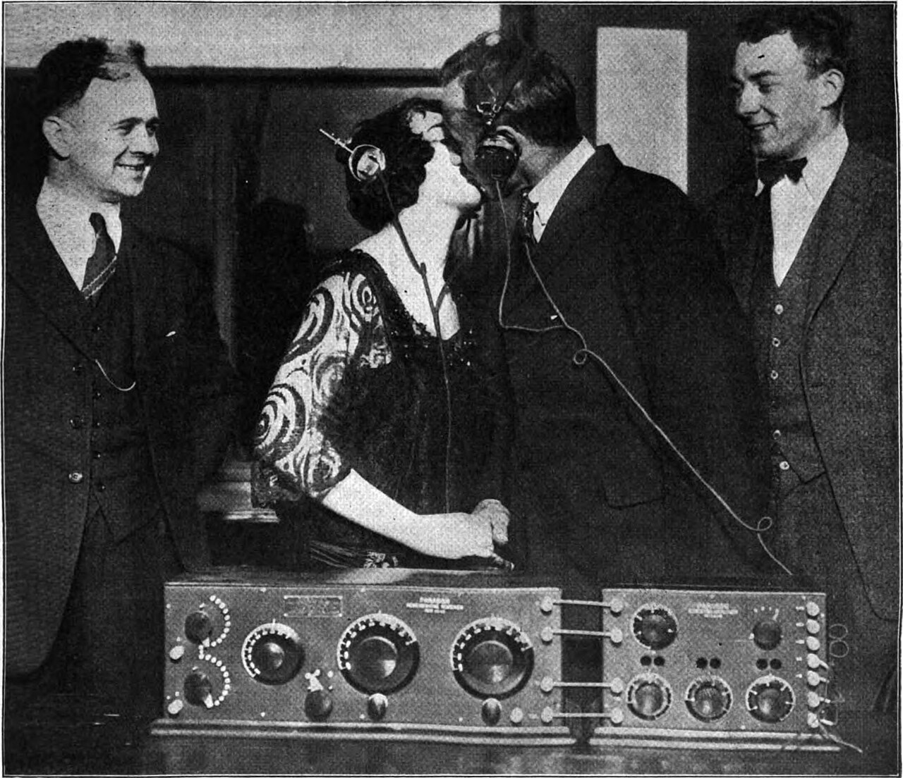
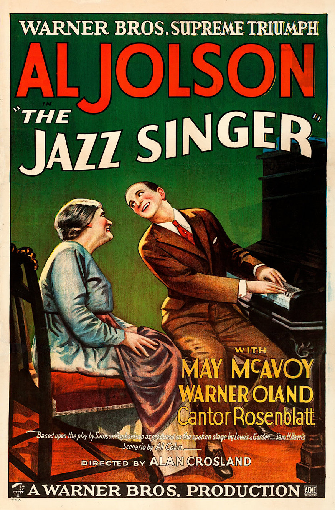
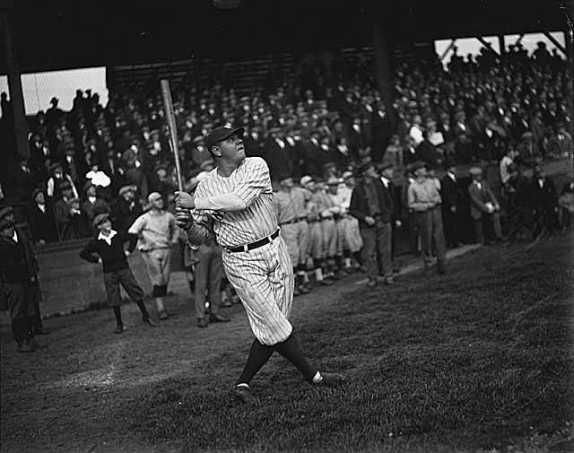
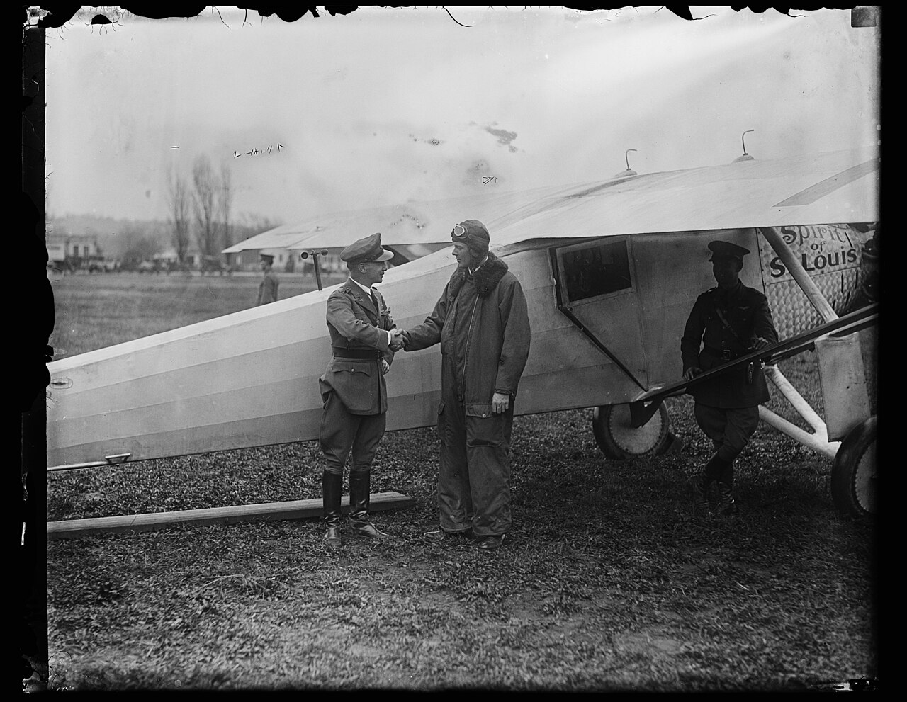

Directions: The year 1927 gave the new media a remarkable run of material: a hero in May, a record in September, a World Series and a talking picture in October. At each station, read the source, study the image where one is given, and answer the questions. At the end, build the chart the lesson question requires: what the whole country shared that year, and what the shared culture did not contain.

Source: Labeled summary of a network radio evening, fall 1927, compiled from the network schedules of the period.

By the fall of 1927 a family with a cabinet set could turn one dial and hear a full evening built in New York and sent by wire to stations across the country. A typical network evening opened with a dinner orchestra, moved to a sponsored variety hour with singers and comedy, and closed with dance music from a hotel ballroom. Between programs, announcers read scores and news briefs. The programs were free. Sponsors paid the network, and the sponsor name was attached to the hour itself.
Nothing in the evening was local. The weather report named another city, the orchestra played in a ballroom the listener would never visit, and the comedy referred to people in the national news. A farmer in Ohio and a clerk in Georgia ended the evening having heard the same jokes, the same songs, and the same scores, at the same time.
What did the listener pay for this evening, and who paid instead? Explain what the payer received in return.
Name two ways this evening differed from an evening of local entertainment in 1915, such as a town band concert or a local newspaper read the next day.
Source: Poster for The Jazz Singer, Warner Bros., 1927, with a labeled summary of the film and its first run.

The Jazz Singer opened in New York on October 6, 1927. Most of the film was silent, told with title cards in the usual way. In several scenes, however, Al Jolson sang, and in one scene he spoke. His best known line from the film, spoken to his mother in a song break, was: Wait a minute, wait a minute. You ain't heard nothin' yet.
The line proved accurate. Theater owners who wired their houses for sound drew crowds that silent houses could not match. Within two years the major studios had stopped making silent pictures for the general market. Actors learned to speak for microphones, theaters hired sound engineers, and audiences in every state heard the same performance, word for word, from the same print.
Why did a film that was mostly silent still change the industry? Answer with what audiences and theater owners did after it opened.
Before sound, a theater in Georgia and a theater in Ohio could show the same film with different local music and different title card translations for immigrant audiences. What did the talkie standardize, and what local variation did it end?
Source: Labeled summary of the front page of the New York Daily News, Sunday, May 22, 1927, the morning after Lindbergh reached Paris.
The Daily News was the largest selling newspaper in the United States, and its front page was built as a picture with a headline rather than as columns of type. On the morning after the flight, the page gave nearly its whole space to the Lindbergh story: a photograph of the pilot and his plane, a headline in type inches high, and a short account written to be read in minutes. The flight had ended the previous evening in Paris. Readers in New York held the picture the next morning, and wire services carried the same photographs to papers across the country for their next editions.
Inside, the paper continued the serial. Readers found the route map, the story of the prize contest, accounts of earlier pilots who had died attempting the crossing, and advertisements placed beside the story for products the readers were expected to buy that week. The hero sold papers, and the papers sold everything else on the page.
How did this front page differ from the front page of a typical newspaper in 1900? Name two differences in form and one difference in speed.
The station text says the hero sold papers and the papers sold everything else. Explain that sentence with one detail from the station.
Source: Photograph of Babe Ruth batting in 1924, with a labeled summary of the 1927 World Series.

The 1927 World Series ended on October 8, when the New York Yankees beat the Pittsburgh Pirates for the fourth straight game and completed a sweep. Ruth hit two home runs in the Series, and sportswriters treated the Yankees as the standard against which later teams would be measured. Most Americans did not attend a game. They followed the Series in newspaper sports pages, in newsreels shown before films, and in radio accounts, and they argued about it the next day with people who had followed it the same way.
The sports page ran on a daily rhythm the other media shared. A game played in the afternoon was described that evening, analyzed the next morning, and folded into the season story of Ruth's pursuit of records. Sport gave the papers and the networks a hero whose performance could be reported, measured, and compared every day of the season.
Most fans never attended a World Series game. By what three routes did the Series reach them, and what did those routes let fans in different states do together?
Why was a daily sport better raw material for the new media than a one time event such as a parade? Use the idea of a record being pursued in your answer.
Source: Photograph of Charles Lindbergh with the Spirit of St. Louis, 1927, Library of Congress, with a labeled summary of the coverage.

Lindbergh took off from Roosevelt Field on May 20, 1927, and landed at Le Bourget field outside Paris thirty-three and a half hours later. The newspapers had covered the race for the Orteig Prize for weeks, including the deaths of earlier entrants, so the public met the flight as the last chapter of a story it already knew. Radio bulletins followed the crossing, and extras and special editions carried the landing within hours.
What followed was organized as carefully as the flight. New York held a ticker tape parade on June 13. Lindbergh then toured the country by air that summer, appearing in city after city on a schedule the newspapers printed in advance. In photographs he appeared as he appears here, a young pilot beside his plane, calm and alone in the frame, even when a crowd stood just outside it.
The coverage began before the flight succeeded. Why did the weeks of advance coverage increase, rather than spend, the public response when he landed?
Look at the photograph. What does the image show, and what does it leave outside the frame? Explain how that choice served the hero story the press was telling.
Complete the chart from the five stations. In the first column, list what a family in Ohio and a family in Georgia would both have heard, seen, or read in 1927. In the second column, list what neither family would have found in the national media that year. Each entry needs a station number as its source.
Both families shared (name at least four, each with a station number):
Neither family found (name at least three, each with a station number or a reading fact):
In a short paragraph, state what the chart shows about the lesson question. Your paragraph must use one entry from each column and must name the role of advertising in the system.
What did the listener pay, and who paid instead? The listener paid nothing. Sponsors paid the network for the programs and attached their names to the hours. In return the sponsor received simultaneous access to a national audience gathered at a predictable time, the audience itself being what the network had to sell.
Name two ways this evening differed from local entertainment in 1915. Any two. The program was produced in one city and heard in many states at the same moment, where a town concert existed only where it was played. The content referred to national figures and scores rather than local people. The evening was paid for by advertisers rather than by tickets or subscriptions. A newspaper account arrived the next day, while the broadcast arrived during the evening itself.
Why did a mostly silent film change the industry? The spoken and sung scenes were the attraction. Audiences crowded into wired houses, owners who installed sound drew the crowds, and the studios read the result correctly. Within two years the major studios had converted to sound production and the talkie was the standard film.
What did the talkie standardize, and what local variation did it end? It standardized the performance itself. Every audience heard the same actor deliver the same words with the same voice from the same print. It ended the local layer of silent exhibition, the house orchestra or pianist whose music differed by theater, and the practice of adapting title cards for local and immigrant audiences.
How did this front page differ from a typical 1900 front page? In form, the 1927 page was built around one large photograph and a headline in very large type, with a short story written for a quick read, where the 1900 page was dense columns of type with few or small images. The tabloid page also treated a sports and adventure hero as its lead story rather than politics. In speed, the flight ended on a Saturday evening in Paris and the photographed page was in readers' hands the next morning, with wire photographs reaching other cities for their next editions.
Explain the sentence about the hero selling papers. The Lindbergh story drew buyers to this paper rather than a rival, which raised circulation. The same readers then met the advertisements printed beside the story, and circulation was what the paper sold to advertisers. Accept any answer that connects the hero to circulation and circulation to advertising revenue with a station detail, such as the route map, the prize contest serial, or the advertisements placed beside the story.
By what three routes did the Series reach most fans, and what did the routes let fans do together? Newspaper sports pages, newsreels shown before films, and radio accounts. Together they let fans in different states follow the same games on the same days and argue about the same plays and the same record chase the next morning, which is a shared national conversation built out of a local event.
Why was a daily sport better raw material than a one time event? A season renews the story every day. Ruth's home run total could be reported, measured, and compared after every game, so the audience had a reason to return daily and a running serial to follow. A parade happens once and is finished. A record pursuit is unfinished until the last game, which holds attention for months.
Why did advance coverage increase the public response? The prize race, including the deaths of earlier entrants, gave the public the stakes and the characters before the flight. Readers and listeners were following a serial whose ending they did not know. When Lindbergh landed, the response released weeks of built attention at once, and the press could present the landing as the conclusion of a story the public already owned a share of.
What does the photograph show, and what does it leave outside the frame? It shows a young pilot in his flight suit shaking hands beside his plane, with the name Spirit of St. Louis visible, and almost no one else. It leaves out the crowds, the mechanics, the backers who financed the plane, the press itself, and the organization of the tour. The framing supports the story of solitary individual achievement, which was the version of the flight the press sold, over the version in which a funded team and a media system produced the event together.
Shared column, any four with station numbers: the network evening of music, comedy, and scores (Station 1); the same talkie performance and Jolson scenes (Station 2); the same Lindbergh front page photograph and story (Station 3); the same World Series result and Ruth record coverage (Station 4); the same hero photographs, parade, and tour coverage (Station 5).
Neither column, any three: Black performers and Black produced programs on network radio, where the leading Black characters were played by white actors (Station 1 and the reading); local and foreign language programming and local musical performance inside films (Station 2); sustained coverage of Black, immigrant, and women producers as makers of the national culture rather than as subjects of sensation (Stations 3 and 5 and the reading); events with no sponsor, promoter, or newspaper value, which the system had no reason to carry (Stations 1, 3, and 4).
Full credit should be awarded if the student: